Idirghníomhú le teachtaireachtaí
Teachtaireachtaí á n-eagarthóireacht
Is féidir leat teachtaireachtaí agus fotheidil a chur in eagar le haghaidh comhroinnte comhad suas le 6 huaire an chloig tar éis iad a sheoladh.

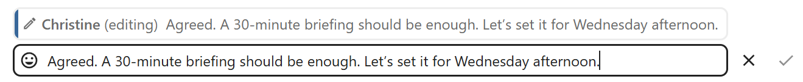
Teachtaireachtaí á bpriontáil
Is féidir le modhnóir teachtaireachtaí tábhachtacha a phionáil i gcomhrá, ar feadh tréimhse áirithe ama nó go dtí nach bhfuil sé ábhartha a thuilleadh.

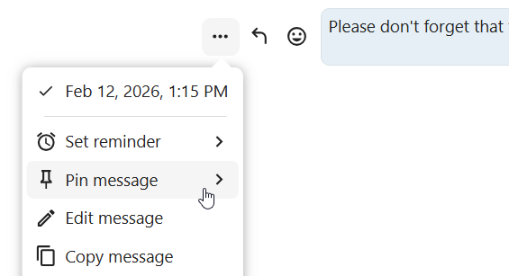
Tá teachtaireachtaí bioráilte aibhsithe agus inrochtana os cionn an chomhrá nó sa chluaisín Míreanna Comhroinnte den bharra taoibh ábhair. Mura bhfuil teachtaireacht bioráilte uait a thuilleadh, is féidir leat í a dhíbhioráil do gach duine nó duit féin amháin ó ghníomhartha tapa.

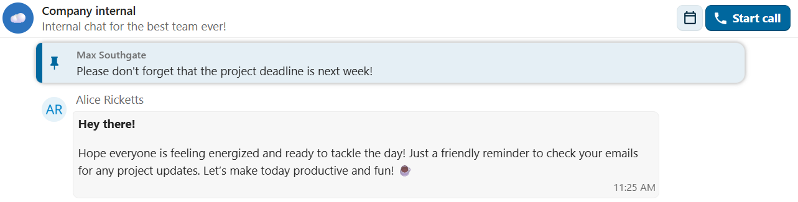
Meabhrúchán a shocrú ar theachtaireachtaí
Is féidir leat meabhrúcháin a shocrú ar theachtaireachtaí sonracha. Más ann do theachtaireacht thábhachtach ar mhaith leat fógra a fháil fúithi níos déanaí, níl le déanamh ach an luchóg a chur os a cionn agus cliceáil ar dheilbhín an mheabhrúcháin.

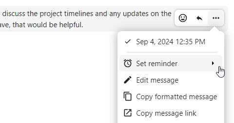
Sa fho-roghchlár, is féidir leat am oiriúnach a roghnú chun fógra a fháil níos déanaí.

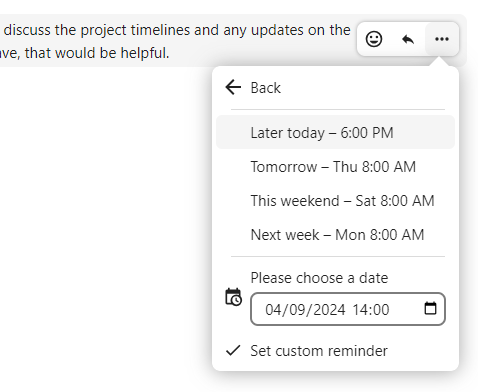
Is féidir leat teachtaireacht a chur ar aghaidh chuig comhrá eile freisin ag baint úsáide as an roghchlár ..., nó í a sheoladh chuig do chomhrá Nóta chugam féin le haghaidh tagartha pearsanta.
Cuardach teachtaireachtaí i gcomhrá
Chomh maith le cuardach aontaithe domhanda, is féidir leat cuardach a dhéanamh ar theachtaireachtaí laistigh de chomhrá ar leith. I mbarra taoibh ábhair comhrá, cliceáil ar an deilbhín cuardaigh chun an cluaisín cuardaigh a oscailt.

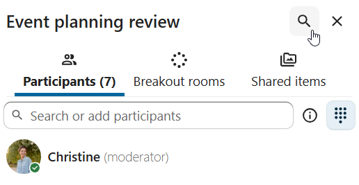
Is féidir leat do chuardach a chúngú trí scagairí amhail raon dáta agus seoltóir a úsáid.

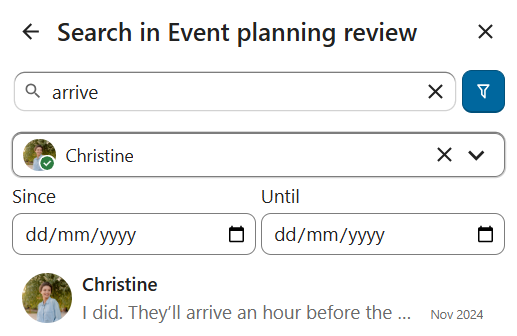
Teachtaireachtaí snáithithe
Is féidir leat snáitheanna a chruthú i gcomhráite chun plé a choinneáil eagraithe. Tá an rogha cruthú snáithe ar fáil sna gníomhartha breise teachtaireachta nua.

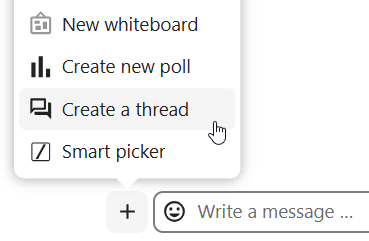
Ansin, is féidir leat teideal agus cur síos a chur leis an snáithe agus an plé a thosú.

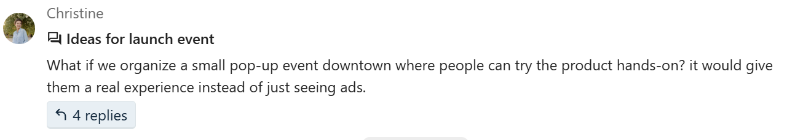
Is féidir leat na freagraí go léir i snáithe a fheiceáil ón gcnaipe freagraí ar an teachtaireacht nó ón táb Míreanna comhroinnte sa bharra taoibh ábhair.

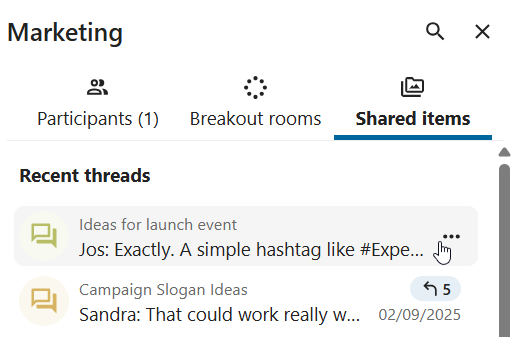
Is féidir leat liostáil le snáithe chun fógraí a fháil faoi fhreagraí nua. Is féidir liostáil ón snáithe féin nó ón mbarra taoibh.

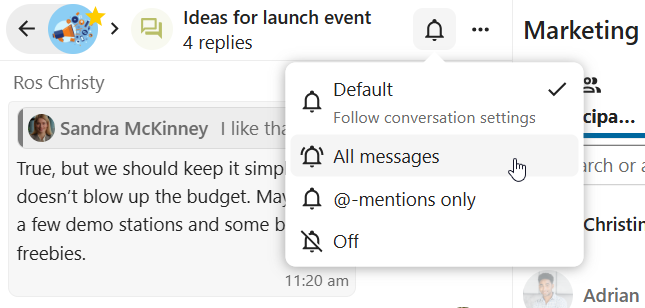
Is furasta rochtain a fháil ar shnáitheanna suibscríofa ón mbarra nascleanúna sa nascleanúint Snáitheanna.

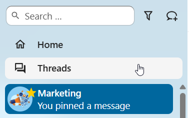
Is féidir leat teideal an snáithe a chur in eagar ón snáithe féin nó ón mbarra taoibh.

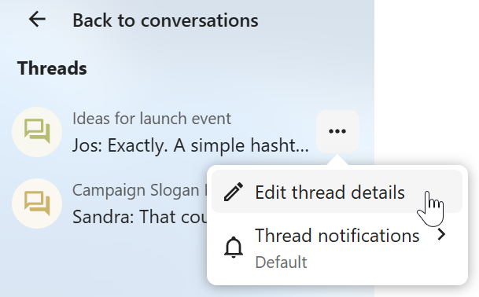
Freagraí príobháideacha
Is teachtaireachtaí iad freagraí príobháideacha a sheoltar go díreach chuig comhrá duine-le-duine idir tusa agus údar ar leith teachtaireachta, chun príobháideachas a chaomhnú nuair is gá.
I gcomhráite grúpa agus poiblí, roghnaigh teachtaireacht ar mhaith leat freagra a thabhairt uirthi go príobháideach.
I ngníomhartha teachtaireachta, roghnaigh
Freagair go príobháideachOsclaítear fuinneog comhrá duine-le-duine, agus an buntheachtaireacht luaite inti.
Cuir do fhreagra leis agus seol teachtaireacht
Cuireann an freagra comhthéacs iomlán ar fáil do theachtaireacht a luadh — lena n-áirítear ainm an tseoltóra bhunaidh, comhthéacs an chomhrá bhunaidh, agus nasc siar.

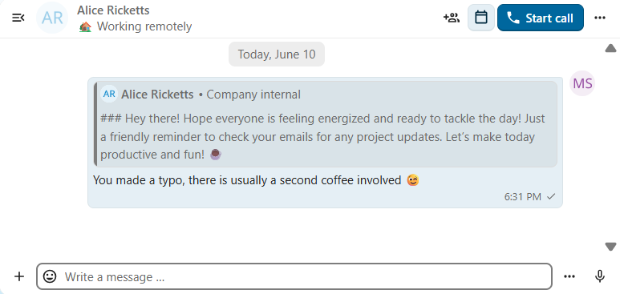
Imoibrithe le teachtaireachtaí
Cuir frithghníomhartha emoji le teachtaireachtaí chun aontú a chur in iúl go tapa, chun ceiliúradh a dhéanamh, nó chun mothúcháin a léiriú, gan freagraí iomlána a chlóscríobh.
Bog an cúrsóir thar theachtaireacht sa chomhrá
Cliceáil ar an gcnaipe
Cuir imoibriú leisi measc gníomhartha teachtaireachtaRoghnaigh emoji ó liosta na cinn a úsáidtear go minic, nó ón roghnóir iomlán
Is féidir leat an cúrsóir a choinneáil os cionn imoibrithe chun a fheiceáil cé na húsáideoirí eile a d’úsáid an t-imoibriú sin. Cliceáil ar cheann de na himoibrithe atá ann cheana chun an emoji céanna a úsáid mar imoibriú! Is féidir leat cliceáil air arís chun d’imoibriú a bhaint den teachtaireacht.

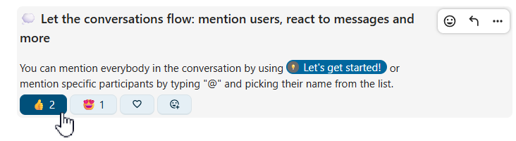